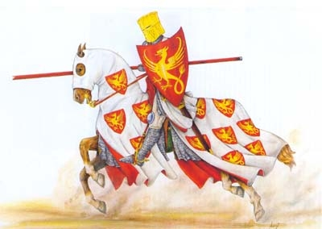

|
Nel 1260 Siena godeva di una prosperità come mai era avvenuto in precedenza. Questa inattesa fortuna era dovuta alla via Francigena, che passava proprio attraverso il territorio dalla repubblica senese ed era utilizzata dai viandanti e dai pellegrini diretti a Roma. La città si era arricchita grazie ai dazi che venivano imposti ai viaggiatori, ai guadagni delle numerose strutture ricettive per viandanti e al commercio che era in forte espansione.
Nei loro traffici sui mercati europei, i Senesi si trovarono ben presto in aperta concorrenza con i banchieri e i mercanti fiorentini. Furono numerose le guerre sostenute tra il 1200 e il 1250 tra Firenze guelfa e Siena ghibellina, battaglie che però non erano riuscite a determinare un vincitore.
Firenze guelfa aveva molti alleati in Toscana, ma poteva contare soprattutto su una forte alleanza con il re di Francia, il cui fratello, Carlo I d'Angiò, aveva forti interessi nel Sud Italia, derivanti dal vuoto di potere verificatosi alla morte di Federico II di Svevia, avvenuta nel 1250.
Firenze era inoltre alleata della Lega Lombarda e godeva infine dell'importantissima benevolenza del Papa, che aveva tutto l'interesse a sconfiggere il ghibellinismo che aveva dominato nel Sud Italia grazie all'impero della casata sveva. Il vuoto di potere lasciato dalla morte di Federico II di Svevia aveva provocato un pandemonio di molteplici interessi divergenti.
Siena ghibellina aveva come alleato principale Manfredi, figlio di secondo letto di Federico II di Svevia e Imperatore in pectore della casa sveva. Altri alleati di Siena erano Pisa e Arezzo, città entrambe a maggioranza ghibellina, nonché Montepulciano e Montalcino. Più in generale la fazione ghibellina era disseminata in tutta la Toscana e, pur essendo generalmente minoritaria, essa trovò in Siena e Pisa due baluardi duri a morire. Qualunque fossero le ragioni di attrito fra Siena e Firenze, la causa che scatenò l'accendersi della miccia che il 4 settembre 1260 portò allo scontro di Montaperti, fu il mancato rispetto da parte senese degli accordi stipulati fra i due comuni nel 1255 alla fine di una guerra che si era conclusa in maniera sfavorevole per Siena e nei quali si sanciva l'alleanza con i fiorentini e l'impegno a non accogliere alcuno che fosse stato bandito da Firenze, Montepulciano e Montalcino. I senesi al contempo erano legati dal 1251 ad un patto di mutua assistenza con i ghibellini fiorentini, così quando nel 1258 questi furono cacciati da Firenze, Siena li accolse venendo meno al trattato siglato tre anni prima.

Siena, che con il trattato di alleanza con Re Manfredi del 1259, aveva ricevuto in rinforzo alcune compagnie di cavalieri tedeschi (circa 800 uomini) al seguito del cugino del Re di Napoli, Conte Giordano d'Anglano, nel febbraio 1260, aveva riottenuto la fedeltà di Grosseto e nel successivo mese di marzo iniziò le operazioni atte alla riconquista di Montemassi e Monteano. Nell'aprile 1260 la lega guelfa si mosse in soccorso della Maremma muovendosi con un esercito di circa 30.000 uomini che, il 18 maggio, si accampò nelle vicinanze del monastero di Santa Petronilla, a poca distanza dalla porta settentrionale di Siena: Porta Camollia. I Cavalieri tedesco-senesi attaccarono il giorno stesso il campo nemico. Il 20 maggio l'esercito guelfo tolse l'assedio a Siena. Una parte restò nei paraggi della città, mentre il grosso delle truppe rientrò a Firenze. L'attività dei soldati della lega guelfa era rivolta a minare con un intenso lavoro ai fianchi gli alleati storici di Siena, che rappresentavano il pericolo maggiore per la supremazia di Firenze. Così l'attenzione si rivolse adesso contro le due alleate storiche di Siena, Montepulciano (che si arrese in luglio) e Montalcino, che con la sua posizione strategica sulla via Francigena, rappresentava una vera e propria spina nel fianco al sistema di commercio e militare della repubblica fiorentina.
La lega guelfa allestì nuovamente, sul finire di agosto, un grande esercito forte di oltre 30.000 fanti e 3 mila cavalieri per portare aiuto e rifornimento a Montalcino appena conquistata. Sicuri della loro forza, i comandanti fiorentini scelsero l'itinerario di marcia che più si accostasse a Siena. L'accampamento fiorentino fu allestito a Pieve Asciata.
Il 2 settembre due ambasciatori fiorentini furono inviati a consegnare un ultimatum al Consiglio dei Ventiquattro, il governo della città di Siena, riunito nella chiesa di San Cristoforo. Fu un momento tremendo per Siena e la situazione sembrò volgere al peggio. Una parte del consiglio dei ventiquattro era propensa alla trattativa con Firenze, ma la posizione predominante all'interno del Consiglio fu che l'esercito senese avrebbe risposto sul campo all'oltraggio fiorentino. I senesi sapevano infatti di poter contare sull'appoggio di molti ghibellini che si erano infiltrati nelle file dell'esercito della lega guelfa. Tra questi figurava il celeberrimo Farinata degli Uberti, citato nel canto X dell'Inferno di Dante. Le successive delibere del consiglio furono quelle di corrispondere ai cavalieri tedeschi, forza insostituibile dell'esercito senese, paga doppia per meglio motivarli alla battaglia. I fondi necessari a questo inconsueto sforzo finanziario furono forniti da Salimbeno de' Salimbeni, potentissimo banchiere senese, che su di un carro coperto da un panno purpureo prestò al comune la considerevole cifra di 18.000 fiorini. I cavalieri tedeschi si diedero subito a manifestazioni di gioia con canti e balli ed investirono subito la paga commissionando agli artigiani senesi coperture in cuoio per sé stessi e per i cavalli.
Nel pomeriggio del 2 settembre il podestà del Consiglio cittadino tenne un drammatico discorso alla cittadinanza davanti alla chiesa di San Cristoforo, citato da Federigo Tozzi, che a sua volta lo riprende dal D'Ancona, un cronista che scrisse questa cronaca pochi anni dopo la battaglia.
|
"Bonaguida si levò suso e disse assai forte, sicché fu udito per tutti quelli cittadini che erano di fuori in su la piazza di Santo Cristofano. 'Signori miei Sanesi e cari miei concittadini, noi ci siamo raccomandati a la santa corona di re Manfredi; ora a me pare che, noi siamo in verità, in avere e in persona, la città e 'l contado, a la Reina di vita eterna, cioè a la nostra Madre Vergine Maria; [...] Vergine Maria, aiutateci al nostro grande bisogno, e liberateci da le mani di questi lioni e di questi superbissimi uomini, che ci vogliono divorare.'"
|
Il 3 settembre l'esercito senese, forte di circa 18.000 soldati e 1800 cavalieri uscì dall'attuale porta Pispini dirigendosi verso il poggio delle Ropole. Dal campo guelfo, che nel frattempo era stato spostato in parte sul poggio delle Cortine, era possibile osservare parzialmente i movimenti ghibellini, i quali, sfruttando questa opportunità fecero sfilare, così cita la leggenda, per ben tre volte l'intero esercito davanti alla vista dei nemici facendo indossare ad ogni tornata all'intero esercito le casacche con i colori di uno dei terzi di Siena con l'obbiettivo di dare l'impressione che ogni terzo cittadino fosse composto da tanti uomini quanto in realtà era l'intero esercito ed impressionare i comandanti guelfi.
La mattina del 4 settembre l'esercito ghibellino, superato il torrente Arbia, si disponeva per la battaglia. Era venuto il momento della resa dei conti. Si era nei pressi di Montaperti, un piccolo borgo della Val d'Arbia situato a circa 6 km a sud est di Siena.
L'esercito ghibellino era composto da quattro divisioni. La prima era formata da 4000 uomini, 3800 fanti e 200 cavalieri al comando del Conte d'Arras che ebbe il compito di aggirare il poggio di Monselvoli in modo da trovarsi alle spalle dei guelfo-fiorentini. La seconda divisione, guidata dal Conte Giordano d'Anglano costituiva l'avanguardia dell'esercito e era costituita da 600 cavalieri tedeschi e da 6000 fanti. Le milizie senesi, capitanate dal Conte Aldobrandino Aldobrandeschi, (4000 uomini) costituivano la terza divisione. La quarta, forte di circa 4000 soldati e 200 cavalieri e comandata da Niccolò da Bigozzi, era predisposta a guardia del Carroccio. Il piano di battaglia ghibellino prevedeva che la seconda e la terza divisione impegnassero l'intero esercito guelfo, nonostante il sole contro e la pendenza, ad evitare lo sganciamento dei guelfi ed al momento opportuno, al gran grido di invocazione del nome di San Giorgio, la divisione del Conte d'Arras uscisse allo scoperto piombando alle spalle del nemico. Prima che iniziasse lo scontro il capo delle milizie senesi, conte Aldobrandino Aldobrandeschi, tenne un discorso per motivare le milizie a dare il meglio di sé contro i fiorentini. è sempre il cronista D'Ancona che racconta:
|
"Come voi avete udito, essendo ordinate tutte le schiere, e messa ogni cosa molto bene in punto, messer lo conte capitano generale fece fare uno grande cerchio di tutta quella franca gente, e ivi fece uno parlamento in questa forma: 'Prima noi invochiamo la nostra madre gloriosa sempre Vergine Maria, che con esso noi sia in aiuto; e lei preghiamo che invochi per tutti noi il suo dolcissimo e sempre benedetto figliuolo, che ci dia forza e vigore contro questi malvagi fiorentini'. E poi si volse verso lo popolo di Siena, e disse: 'Signori Sanesi, io vi ricordo che oggi è quello dì, che noi aremo una grande e solenne vittoria e grande onore, e però pigliate ardire e franchezza, e tutti fate buone spalle, e state francamente al fatto del combattere. Lassate fare a noi con questi franchi e arditi Tedeschi, e noi piglieremo ogni vantaggio, e pertanto seguitereteci francamente; a niuna altra cosa attenderete, se non a combattere e a fare come di quella malvagia gente de' Fiorentini, e tutti gli mettete al taglio delle spade e attendete sempre a uccidere li loro cavalli a pena della vita, che non si pigli niuno prigione, infino che non ha lo vostro bando. [...] Io v'arricordo, Sanesi, che voi combattete per difensione della vostra città; ora pensate quello ch'avrebbeno fatto a voi. Non è dunque peccato di fare quello ad altrui che 'l compagno vole fare a voi'."
|
La fanteria ghibellina attaccò senza successo le posizioni guelfe che, avvantaggiate dal terreno e dal maggior numero di soldati, non solo ressero, ma contrattaccarono accendendo una furibonda mischia ai piedi del poggio di Monselvoli. Sempre il D'Ancona narra che il primo ad attaccare fu Walther von Astimberg (detto da lui Gualtieri), il cavaliere a capo della milizia inviata da Re Manfredi.

|
"Lo franco cavaliere messere Gualtieri, come vidde li nemici, di subito abbassò la visiera del suo elmo, e allacciolla forte dinanzi, e fassi il segno della santa croce; poi prese la lancia colla mano diritta, e richiede forte lo suo cavallo delli speroni, e con grandi grida se ne va inverso e' nemici. Lo primo che giunse si fu lo capitano de' Lucchesi: aveva un nome messere Niccolò Garzoni, e a esso messere Niccolò li giunse la lancia di messere Gualtieri, e passogli tutte l'armadure, e cadde in terra morto; e così lo lassò e passò via colla spada in mano e tanti, quanti ne giungeva, li lassava quasi che morti; e molti n'ammazzò."
|
Lo sfavorevole rapporto numerico rese la prima fase della battaglia decisamente critica per i ghibellini. 1600 cavalieri dovettero reggere le ondate di circa 3000 guelfi. A supporto della cavalleria ghibellina in chiara difficoltà, intervenne, contravvenendo agl'ordini di custodia del Carroccio Niccolò da Bigozzi con i suoi 200 cavalieri. Non mancò certo il valore dei singoli soldati, sia di quelli nobili, che di quelli umili provenienti dal contado, come un tale Gieppo, ricordato sempre dal D'Ancona:
|
"Fuvvi uno che avea nome Gieppo, che con una scure ammazzò de' nemici più di venti, e questo Gieppo era uno che andava spezzando la legna per Siena e a prezzo."
|
Nel tardo pomeriggio scattò l'ingegnoso piano ordito che prevedeva il tradimento di una parte dei ghibellini infiltrati nell'esercito della lega guelfa. Al grido di "San Giorgio", il manipolo dei cavalieri guidati dal Conte d'Arras lanciò un modesto contrattacco. Agli occhi dei comandanti fiorentini dovette sembrare un atto disperato e gli dettero poca importanza. Ma ben presto si accorsero che era solo l'atto iniziale del piano che li avrebbe annientati. Infatti questo attacco era il segnale in codice per il fiorentino Bocca degli Abati che, anche se dietro le schiere degli invasori, era di credo ghibellino. Appena vide il conte muovere verso di lui, Bocca, con un deciso colpo di spada, tagliò la mano al vessillifero che portava lo stendardo della cavalleria fiorentina facendolo volare a terra. Al tempo gli stendardi erano di basilare importanza sia per indicare ai militari dove era il loro comandante sia per distinguere tra alleati e nemici (spesso vestiti con gli stessi colori).
Col cadere dello stendardo le truppe fiorentine furono prese dal panico perché non seppero più dove dirigere il loro attacco. In questo scompiglio generale, centinaia di ghibellini fiorentini, nascosti tra le fila dell'orda guelfa, ne approfittarono per scagliarsi ferocemente contro i loro stessi concittadini dell'opposta fazione. Allo stesso tempo l'esercito senese, anche se esausto e decimato, mosse con inaudita determinazione contro l'oppressore, conquistando una schiacciante vittoria. A compendio di questa epopea facciamo un rapido cenno a due leggende che pare si verificarono in quella battaglia: la lancia del Conte D'Arras incrociò quella del comandante generale dei fiorentini Iacopino Rangoni da Modena trapassandolo da parte a parte alla gola. La morte del capitano fiorentino segnò l'inizio della rotta dei guelfo-fiorentini che iniziarono a fuggire in varie direzioni inseguiti dai ghibellini decisi a fare quello che poi divenne "lo strazio e 'l grande scempio che fece l'arbia colorata in rosso" (come scrisse Dante nel canto X dell'Inferno) che proseguì fino al calar delle tenebre, momento in cui i comandanti ghibellini dettero l'ordine di risparmiare la vita a coloro che si fossero arresi. Sempre il D'Ancona ci serve d'aiuto per raccontare ciò che successe alla fine della battaglia:
|
"Furono li prigioni che vennero in Siena sedici milia; pensate se ne furono morti, ché per la puzza degli uomini e de' cavalli morti s'abbandonò tutta quella contrada; e stette molto tempo che non vi s'abitò, se non per fiere e bestie selvagge!"
|
La leggenda racconta anche della vivandiera senese Usilia che, mossa dalla pietà, fece prigionieri ben 36 fiorentini scampandoli da morte sicura. Il campo guelfo fu messo al sacco: furono catturati 9000 cavalli e 9000 tra buoi ed animali da soma; furono prese bandiere e stendardi, tra le quali il gonfalone di Firenze che fu attaccato alla coda di un asino e trascinato nella polvere. Le perdite dei guelfi furono di circa 10.000 morti e circa 15.000 i prigionieri di cui rispettivamente 2500 e 1500 fiorentini. I ghibellini persero 600 uomini con 400 feriti. In città i festeggiamenti durarono per giorni e furono fatti sfilare tutti i prigionieri catturati nel corso della battaglia. Ecco cosa scrive il D'Ancona a proposito:
|
"Ed entrati che furono nella città di Siena, [...] tutta questa vittoriosa procissione, e onorata da Dio e da le genti, se n'andarono a la chiesa maggiore di Siena, cioè al duomo, a ringraziare l'onnipotente e giusto e misericordioso e benigno Iddio, il quale retribuisce a ciascuno secondo l'opere sue, e quella benedetta e divina reina del Cielo, dolcissima Vergine Maria, la quale non abbandona chiunque ricorre divotamente a lei per la sua misericordia; e poi ognuno si ritornò a le sue stanze, e ognuno guarda li so' prigioni".
|
Dopo la battaglia di Montaperti Siena, che di questo ghibellinismo era divenuta la roccaforte, fu scomunicata con tutti i cittadini; molti stranieri e alcuni capi guelfi d'Italia presero a pretesto la scomunica per non pagare i debiti contratti con i mercanti senesi. Fu così inferto un gravissimo colpo all'economia dei singoli commercianti e, per riverbero, di tutta la città. La battaglia di Montaperti é rimasta leggendaria soprattutto per due motivi: innanzitutto segnò l'apice della potenza militare di Siena e per qualche anno fece pendere l'ago della bilancia della politica a favore dei ghibellini. Il Carroccio che si vede sfilare durante il corteo storico del Palio di Siena é stato ricostruito sulla base di disegni dell'epoca a somiglianza di quello utilizzato in questa battaglia.
Vista col senno di poi la battaglia di Montaperti rappresenta solo un episodio estemporaneo nello sviluppo successivo dello scacchiere politico italiano ed europeo. Nel giro di pochi anni infatti la fazione guelfa riprese il dominio della regione. Nel 1269 Siena dovette subire una sonora sconfitta a Colle val d'Elsa, nella quale cadde Provenzano Salvani, uno dei simboli della vittoria di Montaperti. La vittoria guelfa restaurò la supremazia fiorentina nella regione, nonostante i ghibellini vittoriosi a Montaperti avessero ventilato l'ipotesi di radere al suolo Firenze (dieta di Empoli). Del perché ciò non accadde e delle conseguenze che avrebbero potuto cambiare la Storia d'Italia parlerò nel prossimo futuro in un capitolo interamente dedicato alle lotte tra Guelfi e Ghibellini.
|


 LA BATTAGLIA DI MONTAPERTI -
LA BATTAGLIA DI MONTAPERTI -